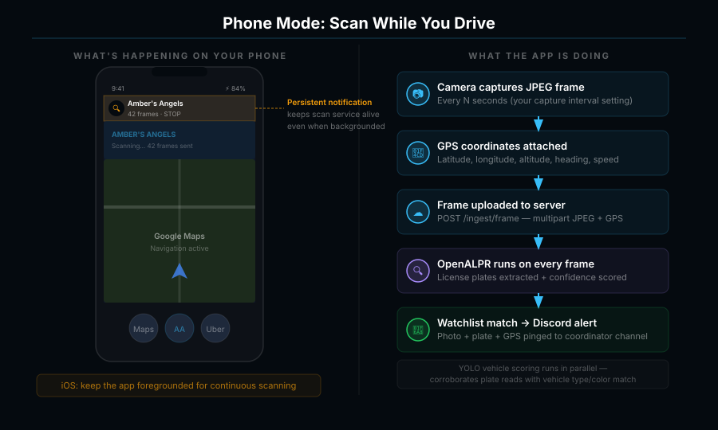
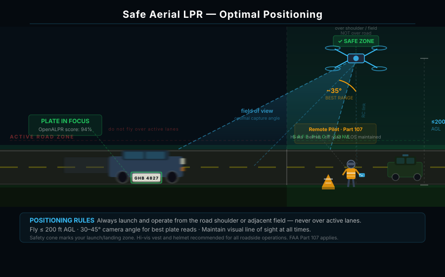

Technology for
Public Safety & Child Recovery
AI-powered volunteer search network that closes the critical time gap in missing persons cases — starting with Carroll County, Georgia.
The window is
already closing.
Law enforcement agencies have powerful tools — but their physical reach is limited by personnel and the fixed locations of stationary license plate readers. Coverage gaps in rural areas, residential neighborhoods, and secondary roads can allow a suspect to slip through during the most critical window for a safe recovery.
The gap is real —
and it's geographic.
Carroll County, Georgia: 503 square miles of mixed urban and rural terrain. A single road network analysis reveals dozens of high-probability escape corridors with zero automated surveillance coverage.
Carroll County, GA — illustrative coverage analysis
A distributed AI search grid
powered by the community.
Amber's Angels transforms standard smartphones and consumer drones into a coordinated, real-time search network — a force multiplier for law enforcement during active AMBER Alerts and missing persons emergencies.
Zero-Barrier Participation
Any approved volunteer with a smartphone and a car mount can participate. No special hardware. Drive normal routes and cover dozens of miles per alert that stationary cameras miss entirely.
Cascade Inference Engine
We don't just read plates — we identify the specific make, model, and year range of the suspect vehicle. Effective even when plates are switched, obscured, or missing.
Privacy-First Architecture
Raw footage deleted immediately after processing. No video archive. No database of innocent citizens. Human coordinator review before any result reaches law enforcement.
Alert fires. Network activates. AI finds the vehicle.
FEMA IPAWS Alert
Government-verified alert triggers platform activation automatically
Mission Push Sent
Volunteers receive sector assignments via Flight Priority Zones
Cascade Inference
YOLOv8 + OpenALPR scans every frame for plate, make, model, color
Human Review
Coordinator verifies every high-confidence hit before escalation
Law Enforcement
Confirmed GPS coordinates + photo sent directly to responding officers
Cascade Inference —
beyond the plate.
Standard systems stop at the plate number. Ours identifies make, model, and year range — so coordinators can alert officers even when plates are switched or missing.
Object Detection — YOLOv8
Vehicle detected and classified in real-time
Generational ID — MobileNetV3
Make, model, year range identified with high confidence
Plate OCR — OpenALPR + ONNX
Plate read and cross-referenced with watchlist
VMMC Dual-Verification
Vehicle + plate match required for escalation
VMMC dual-verification
plate-only systems
Phone scanning + drone surveillance. Zero extra hardware required.
Phone Mode — Scan While You Drive

- Persistent foreground service keeps uploads running in background (Android)
- Every N seconds: JPEG captured → GPS tagged → uploaded → AI scored
Drone Mode — Coordinated Aerial Swarm

- Pilot powers on drone at home, taps Join Swarm — coordinator dispatches remotely
- Coordinator drops a pin on a road or corridor; drone flies to that observation post and hovers — FAA Part 107 VLOS enforced by software (400 m radius from home)
- Volunteer doesn't need to be on scene — they contribute their hardware while a coordinator directs the mission
Not just AMBER Alerts.
Our platform activates across five government-issued alert types — protecting children, seniors, adults with disabilities, and endangered officers.
Abducted Children
Our primary mission — closing the golden hour gap for child recovery cases.
FEMA IPAWS · amber.alert.gov · NCMEC — automatedMissing Seniors
Dementia and Alzheimer's patients who wander and become lost.
FEMA IPAWS · amber.alert.gov · NCMEC — automatedDevelopmental Disabilities
At-risk adults with developmental disabilities who go missing.
FEMA IPAWS · amber.alert.gov · NCMEC — automatedMissing w/ Disabilities
Missing persons with any qualifying disability designation.
State emergency systemEndangered Officers
Law enforcement officers who are endangered or missing in the line of duty.
State emergency systemWe save lives without building a surveillance state.
Every architectural decision begins with one question: what is the minimum data required for this mission? We believe technology should protect the innocent — not catalog them.
No Video Archiving
Raw footage processed in real-time and deleted immediately. No searchable database of innocent citizens — ever.
Operational Necessity Only
We collect and store only data strictly required for the active search mission. Nothing more, nothing less.
Human in the Loop
No AI result reaches law enforcement without human coordinator review. AI flags. Humans decide.
Public Transparency
Data retention policies are public and rigorous. Published alongside every pilot transparency report.
On the ground in Georgia.
Our initial deployment in Carroll County — mixed rural/suburban terrain, active law enforcement partnership, and a veteran community ready to mobilize.
-
1
Enroll and train 30 ground volunteers and 5 Part 107-certified drone pilots
-
2
Achieve operational readiness for live AMBER Alert response
-
3
Demonstrate VMMC detection in field exercises with law enforcement observers
-
4
Publish a public transparency report on detection accuracy and privacy compliance
Impact Math — Launch
Actively seeking formal law enforcement partnership with Carroll County authorities. Active engagement from local SDVOSB veteran network. Proximity to Atlanta metro for rapid AI model iteration.
Help us go live in Carroll County.
Every dollar of grant funding goes directly toward operational readiness and mission expansion — not software licensing fees. Built on open-source foundations by a lean, mission-driven team.
Ground Volunteers
Drivers with smartphones in Carroll County who want to put their daily commute to work during active alerts. Zero special hardware needed.
Requirement: Smartphone + car mount + approved background check
Drone Pilots
FAA Part 107 certified pilots in the Carroll County area willing to deploy during active search missions.
Requirement: Valid Remote Pilot Certificate + DJI-compatible drone
Grant Funding
To cover volunteer training, operational infrastructure, AI model accuracy improvements, and our public transparency reporting program.
Contact: info@amberangels.org
When a child goes missing,
every second is the golden hour.
We are building the network that makes sure no road goes unwatched and no community goes unprotected.
Join us.